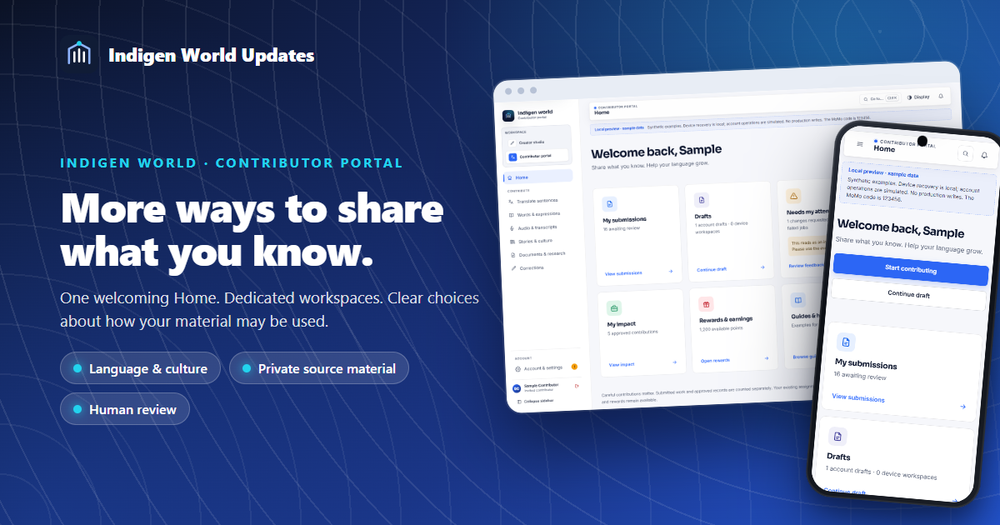
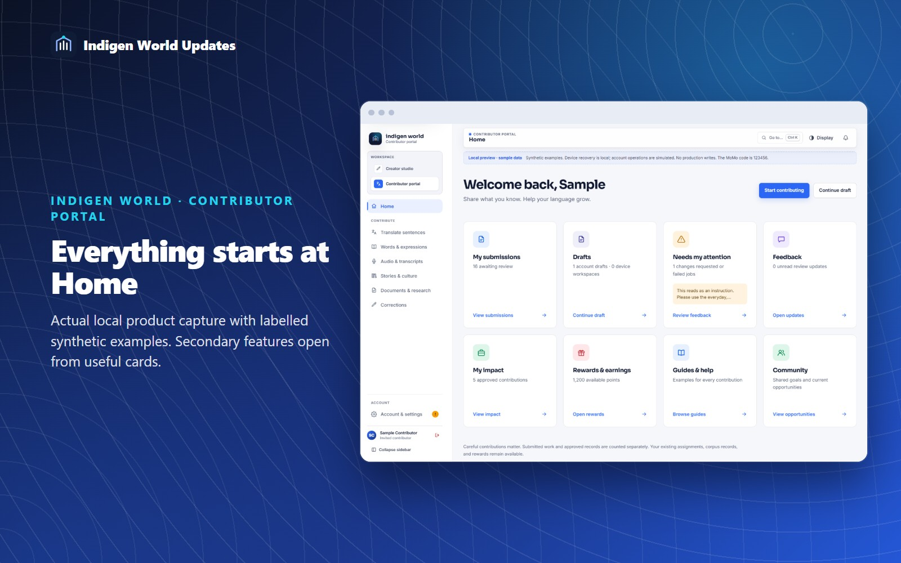
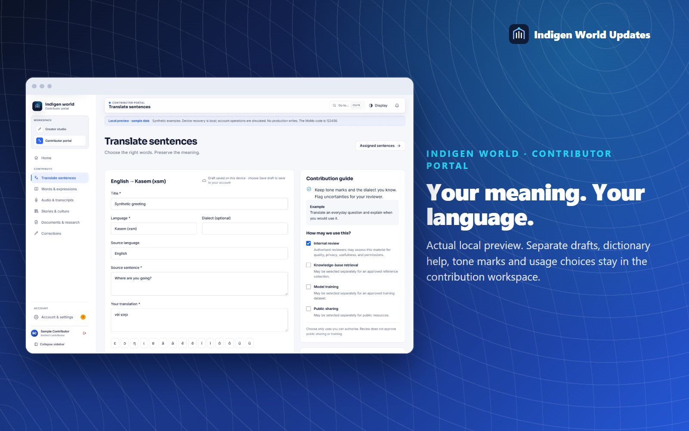
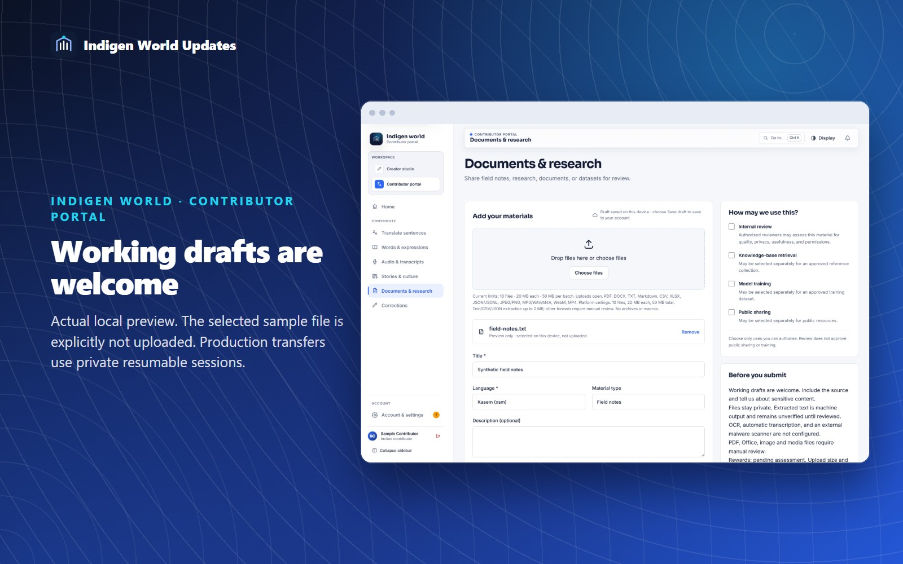
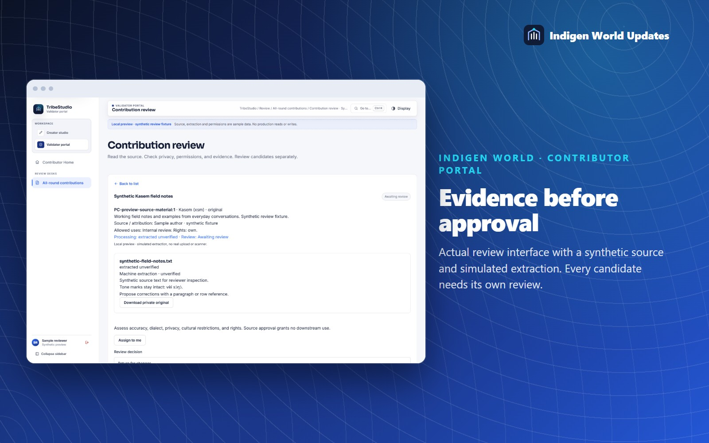

Language lives in sentences, recordings, stories, field notes and everyday knowledge. The redesigned Indigen World Contributor Portal brings these ways of contributing into one welcoming workspace.

Home brings together submissions, drafts, requested changes, feedback, impact, rewards, guides and community opportunities. Each card has a clear action. Contribution types stay in the sidebar; on a phone, open the labelled navigation menu.

Translate a sentence, add words and expressions, record or transcribe audio, share cultural knowledge, upload source documents, or propose a correction. Each workspace keeps a separate device draft. Save draft also keeps an account version. Preview your contribution before submitting, then keep its receipt ID to follow review.
Existing assigned translations and their invitation links remain available. Dictionary suggestions and Kasem tone marks are preserved. Uploaded filenames do not pretend to be completed transfers: unfinished files must be selected again after a reload.

Working research drafts, field notes, glossaries, transcripts and datasets are welcome. Choose files or drop a batch into Documents & research. Each file has its own progress and error state. Production uploads stay private and can be paused, resumed or retried.
Choose internal review, reference retrieval, model training and public sharing separately. Broad permission is not selected for you. Explain who owns the material and flag personal, confidential or culturally restricted information. Speaker permission for recordings does not include voice cloning.

Authorised reviewers can inspect source material, return a version with feedback, or escalate a disagreement. A passage selected from an approved document becomes a separate candidate, with its source version and page, row, paragraph or time reference. It needs a separate review. Uploading a large document or creating many candidates does not automatically award points.

Administrator exports check current approval, permitted use and source eligibility, and include a versioned manifest. Withdrawing a source excludes it and its candidates from future exports. Withdrawal cannot automatically reverse a completed training run.
The portal uses existing contributor invitations and reviewer permissions. Platform upload ceilings are ten files, 20 MB per file and 50 MB per batch; administrators may set lower limits. TXT, Markdown, CSV, JSON and JSONL have bounded text extraction. PDF, Office documents, images and recordings require manual review. Automatic OCR, transcription and an external malware scanner are not configured in this release. No model-training service is being launched.
Open the Contributor Portal with your invited account. For confirmed deployment and verification details, see the release handoff accompanying this article.